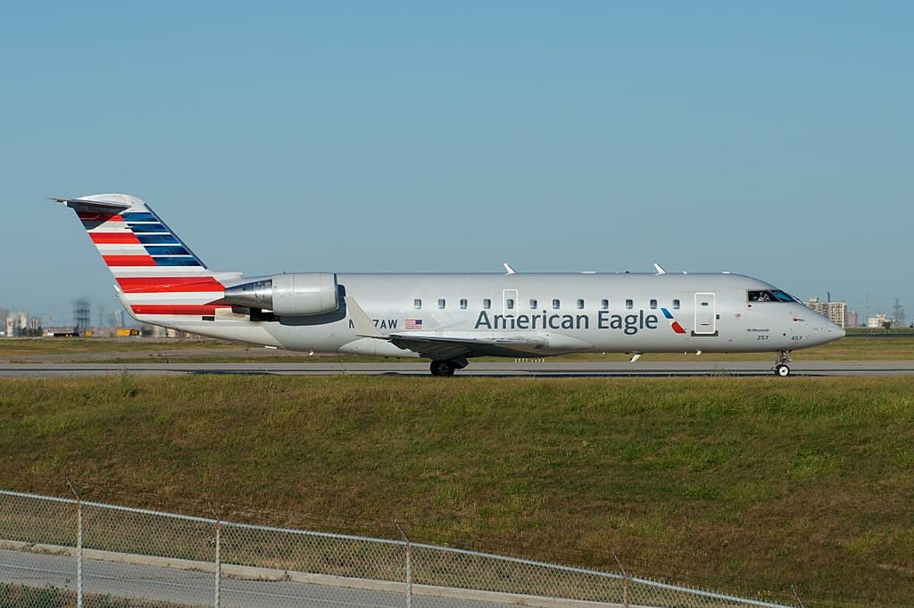
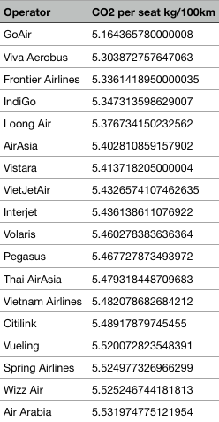
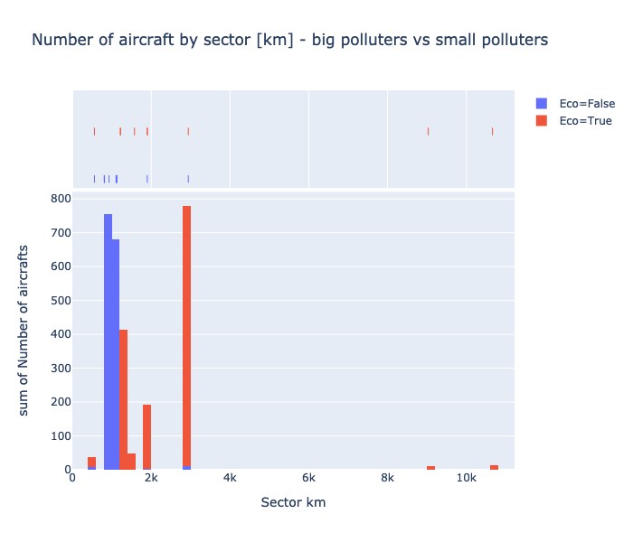
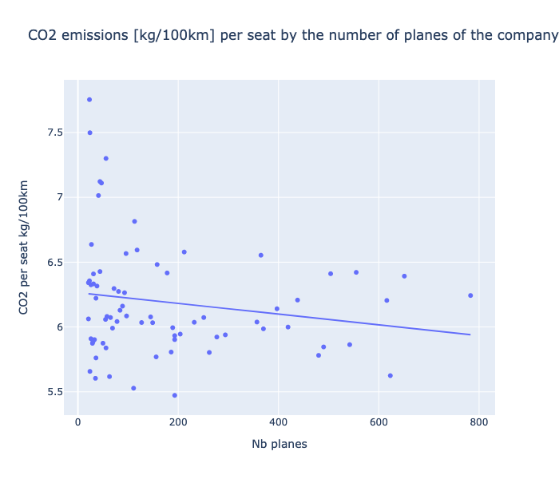
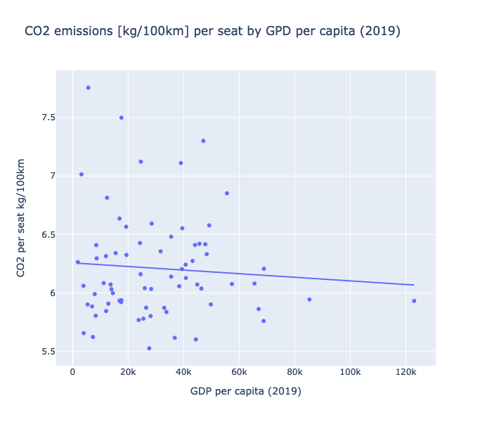
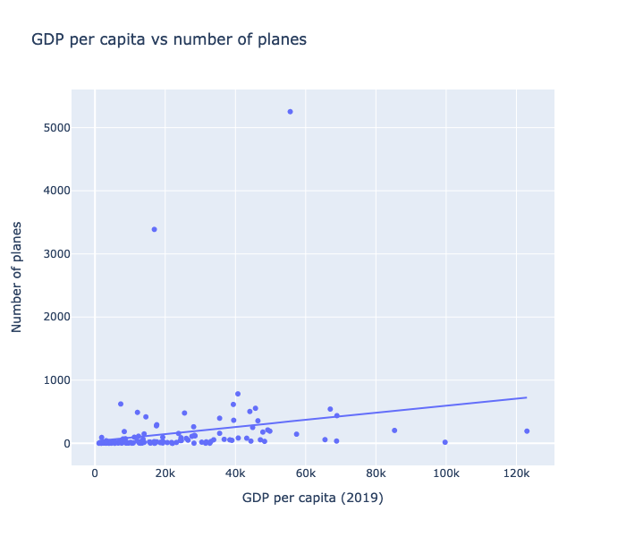
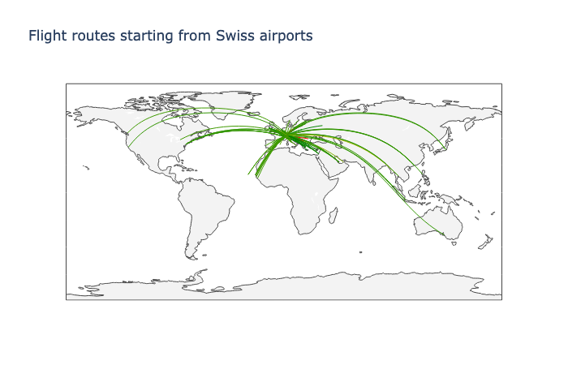
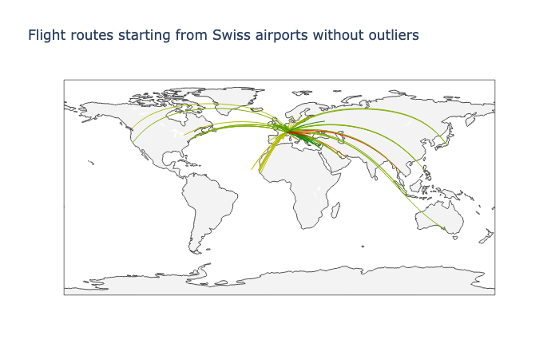
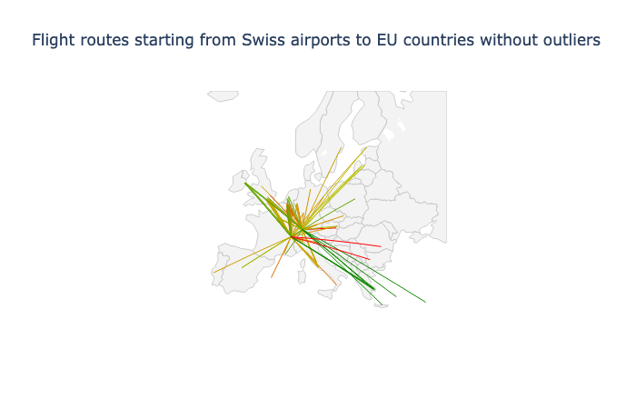

Now that we have a good understanding of the relation between distance and carbon emissions, we would like to identify what type of traffic is the most polluting. We are also interested in finding the factors, if any, that make some airlines less polluant than others.
For this part, we will need to get our hands on the fleets of each airline in details. To do that, we obviously need a dataset containing informations about airlines and their fleets. Well thanks to planespotter.net, we have all the informations that we need, and even more. They nicely agreed to share their data with us for research purposes only, and we would like to thank them again for that.
Since you are probably curious, here is a short parenthesis about one issue was that we encountered when merging all the data that we had. Some aircrafts of the same model can be equipped with different number of seats. This means that the overall mass of the aircraft is slightly different and it leads to a slight difference in fuel burn / km. Since we needed to have unique aircrafts models (otherwise we would not know which version of a given model to take into account), we solved this issue by grouping the all the same aircrafts models together and averaging their values (i.e. a mean). Once it was done, we had a huge dataset with a lot of informations in it.
Now that you know the story behind our data, let’s have a look at what we are interested in, starting with the trends per operator.
The criterias of the fleet of aircrafts that we are interested in are:
Status = Active (in operation)
Config = Pax (passenger)
Operator Category = Airline, Leasing Company, Business Airline
You may be wondering why we are considering three operator categories, given that airlines are our main focus. Well, given how often Airlines lease aircrafts to operate their flights, considering leasing company will allow us to include another large player in the passenger transport industry. To give an example of large airlines leasing flights, we can cite the example of Norwegian. During the summer 2018, Norwegian saw part of its Boeing 787 fleet grounded due to issues with their high-bypass turbofan engine, the “Rolls Royce Trent 1000”. To still be able to operate flights from London to New York, Norwegian used wet leasing from High Fly with A380 aircrafts.
Wet leasing is a lot different than leasing, because the leasing company provides crew, pilots, maintenance, fuel, service, and even aircraft certification.
In addition to this, including business airlines will allow us to consider more of the private sector of private jets.
Talking about aircrafts types, we had a look at the Combi aircrafts type. For those of you that are not aviation experts, here is the definition from Wikipedia of a Combi aircraft :
“Combi aircraft in commercial aviation are aircraft that can be used to carry either passengers, as an airliner, or cargo as a freighter, and may have a partition in the aircraft cabin to allow both uses at the same time in a mixed passenger/freight combination.”
In our dataset, very few aircrafts are flying a Combi setup. Amongst those aircrafts, almost half of them belong to the air force. We decided to not consider them since they are too few to be of any impact in our analysis.
Let’s look at the largest airlines in the world
We want to look only at the “big” airlines. Let’s say that a big airline has at least 30 aircrafts in its fleet. 30 is an arbitrary number that narrow down all of our airlines from almost 2000 to approximately 200. We thought that keeping 10% of all of our airlines for this analysis was a reasonable choice, and this explains the choice of “30”. Looking at small companies is out of the scope of this analysis.
Now that we have selected our big airlines, let’s look at their individual average CO2 production.
If you look closely, you will see that some company names are very similar. Here is the trick : most of these airlines are subsidiaries of larger airlines and are the regional operators. For example, Lufthansa CityLine is a company that belongs entirely to Lufthansa and operates flights on their behalf. More precisely, most of Lufthansa CityLine fleet are Bombardier CRJ-900. The CRJ-900 is a regional jet developed by Bombardier that entered service in 2001.
Pro tip: Aviation geek jargon “A regional jet (RJ) is a jet airliner and a regional airliner with less than 100 seats.” (source: wikipedia)
From what we saw on this graph, a new “arbitrary” number came to our minds: 8. 8 is the threshold that we chose, that corresponds to the mean CO2/100km emission per seat above which an airline is considered to be a big polluter.
That being said, let’s look at what aircrafts are mostly flown by the airlines from our big polluter list.
Apparently, airlines that pollute a lot per passenger (still CO2 kg/100km) are mostly operating Bombardier CRJ (Canadair Regional Jet) or Embraer ERJ (Embraer Regional Jet). These are aircrafts that were designed at the turn of the century and that are not engineered to fly long distances. And if we look look closely at these mostly used aircrafts:
We can see that most of the aircrafts that pollute a lot are used for regional flights. The worst aircrafts with regards to pollution are the Bombardier CRJ-200 and CRJ-100. The picture below is one of a CRJ-200.

These small jets are used to connect small airports to main hubs, and this brings back what we said in part 1, where we found out that small distances are the worst.
Now that our analysis about big polluters is over, we want to know who are the heroes of aviation, the ones that allow people to travel without polluting too much.
Small polluters
Again, our criteria for an airline to be a “small polluter” is arbitrary. We chose the following treshold : less than 5.55 kg/100km of CO2 per seat. Let’s break the suspense, here is a list of the small polluters among the biggest airlines:

From looking at this list, we can see that most of them are low cost airlines. This could be explained by the fact that low cost airlines tend to squeeze more seats into an aircraft and will reduce what is included with the flight, which would probably reduce the total mass of the plane. This question would require further research., and we will discuss it at the end of our analysis.
Let’s look at what aircrafts are mostly flown by the airlines in our small polluter list.
We can see that this is mostly recent aircrafts which, as said in part one, pollute less. The Neo and Max family at Airbus and Boeing respectively are the newest kind of aircrafts that are being produced.
If our statement about more recent airplanes polluting less is true, what about the sector of those less polluant aircrafts ?
From the graph above we can see that the aircraft that is the most flown by the small polluters has a range of less than 3000km. Except for two of the aircrafts (which are not used that much), they all lay within the “optimal” range found in part 1. That makes us happy (:
Finally, let’s compare the sector of aircrafts operated by big polluters and the sector of aircrafts operated by small polluters.

We can see from the histogram above that airlines that are polluting less are operating flights with aircrafts that are designed to fly further.
We can conclude from this analysis that we have found significant differences between regional airlines and low cost airlines. Flying with a low cost airline will most likely reduce your CO2 emissions per kilometer compared to fly with a regional jet. The reason of being of these two types of flights is entirely different. The purpose of regional flights is to allow passengers to stop over in one of the main hubs of the airline before continuing on with another flight. So these flights can be more expensive (burn more fuel) than flights operated by a low cost airline.
Low cost are on the other hand trying to minimize their operating costs. Since fuel expenses represent approximately 25% of their operating costs (according to https://www.statista.com/statistics/591285/aviation-industry-fuel-cost/), low cost airlines have a large interest in operating fleets of aircrafts that burn less fuel.
We would like to thank planespotters.net and Gapminder for providing us the datasets that this research required.
ANALYSIS PART 3
Geographical trends in aviation CO2 emissions
So far we took into account the distance, the type of aircraft and the airlines. One logic way to expand our analysis is to see what does that represents in terms of countries.
As a warm-up for this part, let see the numbers of airplanes by countries.
Well, US and China have a lot more airplanes than the others. After ensuring that these two huge numbers are not due to a data cleaning error or bad data. Indeed after a bit of Googling we realize that for example Americain Airlines is the largest airline in the world with a huge fleet and there are some really big carriers in those countries.
So let's see the rest of the world :
This plot seems to be more representative. But there is some countries with to few airplanes. For example Botswana only has one aircraft. So our datasets do not cover all countries, we decided to put a threshold of 20 aircrafts and drop the countries that are below.
Now, we can plot the average CO2 emissions per seat for 100 km for each of the remaining countries.
This representation allows us to see where the other larger players in the aviation market are. Nevertheless, it is hard to see any trend between the number of planes and the CO2 that it is emitted per seat.
So we continue our analysis looking at a linear model for this.

Well, it is not successful at all. We can only conclude that there is no linear model that will explain the link between CO2 per seat (kg/100 km) and the number of planes a country has.
However, we can continue our analysis and try to find a factor between countries and average CO2 per seat (kg/100 km). So let's plot it on a map.
What does this maps show us ? One first limitation that we do not have enough data for the African continent. But even excluding Africans countries, we can observe that Western countries (ie: USA, Canada, European countries) pollute more than the rest of the world. To explain that we can state two hypothesis :
- Higher income allow people to travel more short distances.
- Poorer countries probably do not have a lot of internals flights.
Let's take the first one and show in a map ploting the income by person.
The map looks good and we can say that our first hypothesis seems to be true.
However, we are once again not able to show that he higher the GDP per capita is, the more a flight pollutes per seat with a regression.

To go further, we tried a regression betwenn the number of planes and and the GPD per capita. In that case, we can say that the trend, Countries with higher GDP per capita tend to have more airplanes, is statistically relevant.

CONCLUSION PART 3
We can see several things. First, there is big differences between countries in terms of number of airplanes and consequently air traffic. Secondly, there is indeed a group of rich country that pollute more. That could be obvious things but here we have numbers and statistics to show that.
ANALYSIS PART 4
Is there some better flight route for a Swiss traveller ?
The last aspect that we want to explore with you are the flight routes. As we are based on Switzerland, we take into account only the flight route from Swiss airport.
We start with the long distance routes, so the one that go outside of the Europe.

Well we do not see anything on this graph, let's remove the outliers in order to have a better view

We can observe from the map above that flights that are not long hauls will have better CO2 emissions per seat than the long hauls that cross the Atlantic, or Asia. This confirms that flights that fly longer distances will pollute more per kilometer.
Let's now have a look at the European situation. We plot plot what are the less polluting by km routes from Switzerland to EU countries and we directly remove the outliers which remain the same.

We can see from the graph above that shorter flights tend to use more fuel. This confirms the findings done in the first analysis where it was found that CO2 emissions per seat decrease rapidly when aircrafts increase their flight distance up until 6000 km. It is then not a surprise to see the longer flights on this map having higher CO2 emissions per seat.
Another element we can see on this plot is that there is better destination to go for if you care about the environment even for similar distances. In fact, we seee a broad range of colors for distances which are similar.